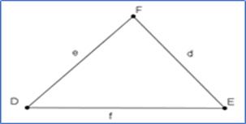
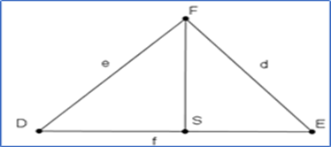
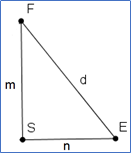
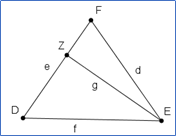
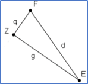
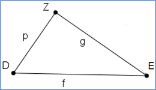
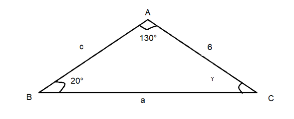

Resolución de triángulos Oblicuángulos
Esta es la última lección de la unidad,para ella requerimos nuevamente la lección 1 para poder construir los aprendizajes de esta lección 5.
Aprendizaje:
Comprende el proceso de deducción de las leyes de senos y de cosenos, para resolver problemas sobre triángulos oblicuángulos.
Empecemos.
Ley de los senos: realicemos la demostración de la ley de los senos.

Trazaremos en el ∆DFE la altura correspondiente al lado f, y el punto de intersección de la altura con el lado f nómbralo con la letra s.

La altura trazada que corresponde al segmento SF lo designaremos dicho segmento con la letra m.
Observa que se forman los triángulos, $\bigtriangleup DSF$ y $ \bigtriangleup ESF$ .
En el triángulo $\bigtriangleup DSF$ , al segmento DS lo designaremos con la letra s, y se muestra a continuación
El seno del ángulo D es igual a
\[sen\angle D=\frac{{{{m}}}}{{{{e}}}}\]
\[e=\frac{{{{m}}}}{{{{sen\angle D}}}}\]
De donde $m = e = sen\angle D \ ...1$
En el triángulo $\bigtriangleup ESF$, al segmento SE lo designaremos con la letra n, y se muestra a continuación.

\[sen\angle E=\frac{{{{m}}}}{{{{d}}}}\]
\[d=\frac{{{{m}}}}{{{{sen\angle E}}}}\]
De donde $m = d=sen \angle E \ ...(2) $
De las igualdades (1) y (2) tenemos.
\[e(sen\angle D)= d(sen\angle E)\]
Dividiendo la igualdad por (e)(d), se obtiene:
\[ \frac{{{{(sen \angle D)}}}}{{{{d}}}} = \frac{{{{(sen \angle E)}}}}{{{{e}}}}\] ….(3)

Ahora trazamos la altura al lado DF, a la altura le asignaremos la letra g, el punto de intersección de la altura g, con el lado e lo designaremos con la letra Z.
Se forman los triángulos $ \bigtriangleup FZE$ y $ \bigtriangleup DZE$
Triángulos
Ahora responde en la siguiente actividad.
En el triángulo $ \bigtriangleup FZE$ designamos al segmento ZF con la letra q.

El seno del \[ sen{ (\angle F )} = \frac{{{{g}}}}{{{{d}}}}\] De donde \[ g = d(sen (\angle F))\] . . .. (4) En el triángulo $ \bigtriangleup DZE$ , designamos al segmento DZ con la letra p.  El seno del \[ sen{ (\angle D )} = \frac{{{{g}}}}{{{{f}}}}\] Despejando g se tiene: \[ g = f(sen (\angle D ))\] . . .. (5) De las igualdades (4) y (5) tenemos: \[ f(sen (\angle D )) = d(sen (\angle F))\] Dividiendo la igualdad por (d)(f), se tiene \[ \frac{{{{(sen \angle D)}}}}{{{{d}}}} = \frac{{{{(sen \angle F)}}}}{{{{f}}}}\] …(6) De las igualdades (3) y (6) tenemos \[ \frac{{{{(sen \angle D)}}}}{{{{d}}}} = \frac{{{{(sen \angle E)}}}}{{{{e}}}} = \frac{{{{(sen \angle F)}}}}{{{{f}}}}\] ley de los senos. Calcular las partes restantes del triángulo de la siguiente figura  Como la suma de los ángulos internos de todo triángulo es 180º. 20º + 130º + $\gamma$ = 180º. De donde 150º + $\gamma$ = 180º. Así que, $\gamma$ = 180º - 150º, la magnitud del ángulo $\gamma$ = 30º. Para la resolución de algunos triángulos usando la ley de los senos, se utiliza la siguiente igualdad. Sí $\alpha + \beta = 180$ , entonces, \[ (sen (\alpha)) = (sen (180°-\alpha))=(sen (\beta))\] Sí $ \alpha + \beta = 180^{\circ}$ entonces, sen $(\alpha) = sen(180^{\circ} - \alpha)$ , con $90^{\circ} < \alpha < 180^{\circ}$ La cual puedes comprobar con tu calculadora, sean $\alpha = 110^{\circ}$ y $\beta = 70^{\circ}$ entonces $110^{\circ} + 70^{\circ} = 180^{\circ}$ y $70^{\circ} = 180^{\circ} - 110^{\circ}$, por lo que \[ sen{ (110^\circ)} = sen{ (180^\circ-110^\circ)}= sen{ (70^\circ)}= 0.939\] Ahora aplicando la ley de los senos al triángulo dado. \[ \frac{{{{(sen 20^\circ)}}}}{{{{6}}}} = \frac{{{{(sen 130^\circ)}}}}{{{{a}}}} = \frac{{{{(sen 30^\circ)}}}}{{{{c}}}}\] Y como sen (130º) = sen (50º), podemos escribir: \[ \frac{{{{(sen 20^\circ)}}}}{{{{6}}}} = \frac{{{{(sen 50^\circ)}}}}{{{{a}}}} = \frac{{{{(sen 30^\circ)}}}}{{{{c}}}}\] Se determina el valor de a \[ \frac{{{{(sen 20^\circ)}}}}{{{{6}}}} = \frac{{{{(sen 50^\circ)}}}}{{{{a}}}} \] \[a= \frac{{{{6(sen 50^\circ)}}}}{{{{sen 20^\circ}}}} = \frac{{{{6(0.766)}}}}{{{{0.342}}}} = 13.438\] La longitud del lado a = 13.438 Ahora considerando \[ \frac{{{{(sen 20^\circ)}}}}{{{{6}}}} = \frac{{{{(sen 30^\circ)}}}}{{{{c}}}} \] \[c= \frac{{{{6(sen 30^\circ)}}}}{{{{sen 20^\circ}}}} = \frac{{{{6(0.5)}}}}{{{{0.342}}}} = 8.771\] la longitud del lado c = 8.771.